Call:
lm(formula = Hg ~ size, data = HgDat_df)
Residuals:
Min 1Q Median 3Q Max
-0.40504 -0.23643 0.04328 0.17756 0.39058
Coefficients:
Estimate Std. Error t value Pr(>|t|)
(Intercept) 0.670321 0.107862 6.215 6.39e-08 ***
size 0.018793 0.002619 7.176 1.62e-09 ***
---
Signif. codes: 0 '***' 0.001 '**' 0.01 '*' 0.05 '.' 0.1 ' ' 1
Residual standard error: 0.2208 on 57 degrees of freedom
Multiple R-squared: 0.4746, Adjusted R-squared: 0.4654
F-statistic: 51.49 on 1 and 57 DF, p-value: 1.62e-09Second part: GLMM
Back to our example
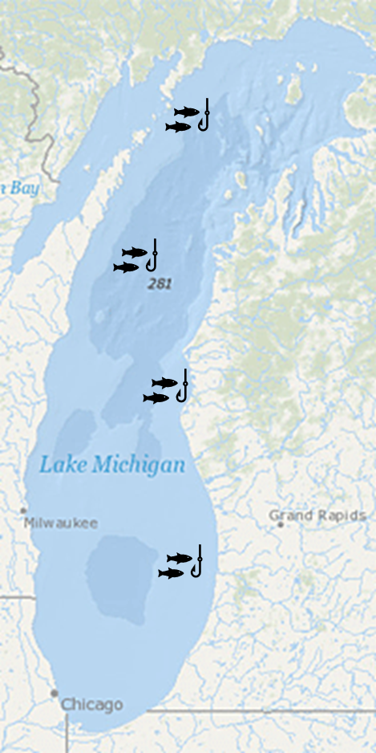
Back to our example
We set 4 nets
Sites were randomly chosen
We are interested in the content of Hg in Walleye
Hg is correlated with size. The bigger the fish, the higher Hg content it has
So, normally we could do one thing:
\(E(Hg_i) = \beta_0 + \beta_1 \times size_{i}\)
Linear model
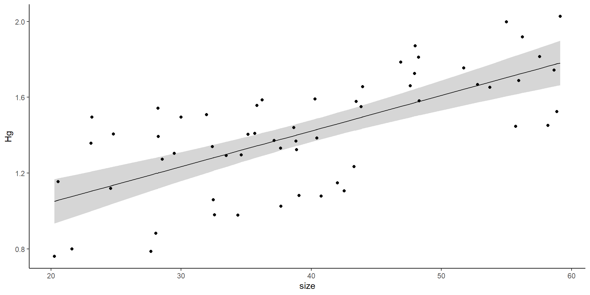
Linear model
Use coefficients to estimate size at over 1.1 \(\mu g\) .
Limit fish of that size
The variance can affect the slope, the intercept, or both
Random effects introduce variance.
It can introduce variance to the intercept or to the slope
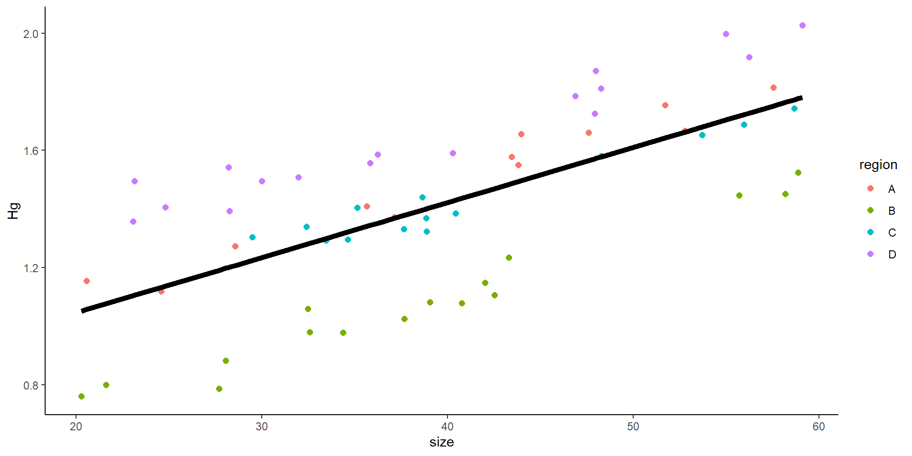
Mixed model
No mixed model:
\[ Hg_i \sim \beta_0 + \beta_1size_{i} + \epsilon \]
i individuals, j sites (4), mixed intercept:
\[ Hg_{ij} \sim \underbrace{(\beta_0 +\underbrace{\gamma_j}_{\text{Random intercept}})}_{intercept} + \underbrace{\beta_1size_{i}}_{slope} +\underbrace{\epsilon}_\text{ind var} \]
Variance comes from random “selection” of fish within a net
Variance comes from random “selection” of sites
What does a mixed intercept mean?
Mixed model with random intercept
This is the result of a mixed model:
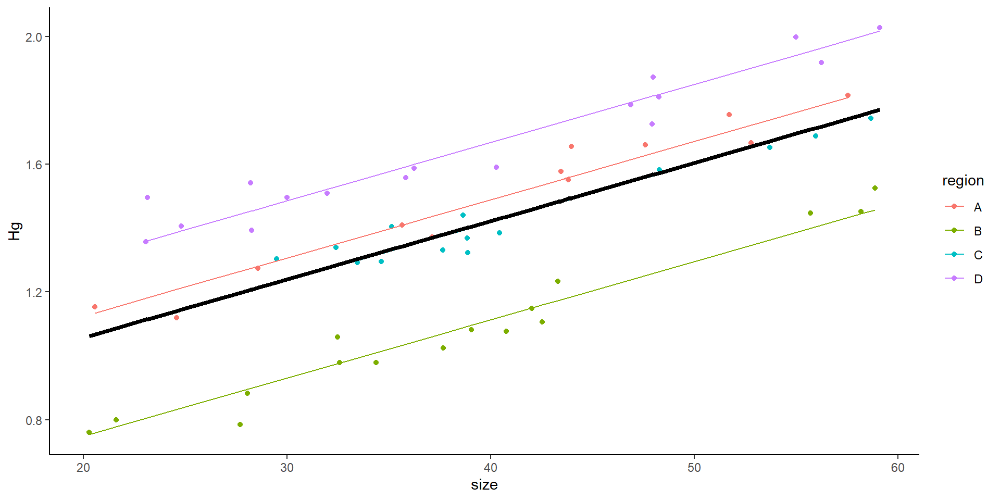
- What does the random intercept mean?
- Why not simply do:
- \(Hg_i \sim \beta_0 + \beta_1size_{i} + \beta_2rB_{i} + \beta_3rC_{i} + \beta_4rD_{i} \epsilon\)
- Model with effect of site
Mixed model with random intercept
Family: gaussian ( identity )
Formula: Hg ~ size + (1 | region)
Data: HgDat_df
AIC BIC logLik deviance df.resid
-151.4 -143.1 79.7 -159.4 55
Random effects:
Conditional model:
Groups Name Variance Std.Dev.
region (Intercept) 0.040293 0.20073
Residual 0.002728 0.05223
Number of obs: 59, groups: region, 4
Dispersion estimate for gaussian family (sigma^2): 0.00273
Conditional model:
Estimate Std. Error z value Pr(>|z|)
(Intercept) 0.6927873 0.1036098 6.687 2.29e-11 ***
size 0.0182332 0.0006227 29.279 < 2e-16 ***
---
Signif. codes: 0 '***' 0.001 '**' 0.01 '*' 0.05 '.' 0.1 ' ' 1\[ Hg_{ij} = \underbrace{(\beta_0 +\underbrace{\gamma_j}_{\text{Random intercept}})}_{intercept} + \underbrace{\beta_1size_{i}}_{slope} +\underbrace{\epsilon}_\text{ind var} \]
Where:
\[ \epsilon \sim N(0,\sigma^2) \]
\[ \gamma_j \sim N(0,\sigma^2_\gamma) \]
Mixed effects models: how to run them?
Random effects are specified as \(x|g\)
x is an effect
g is grouping factor (categorical)
\(1|region\)
Effect -> 1 (intercept)
Grouping factor -> region
Mixed effects model output
Family: gaussian ( identity )
Formula: Hg ~ size + (1 | region)
Data: HgDat_df
AIC BIC logLik deviance df.resid
-151.4 -143.1 79.7 -159.4 55
Random effects:
Conditional model:
Groups Name Variance Std.Dev.
region (Intercept) 0.040293 0.20073
Residual 0.002728 0.05223
Number of obs: 59, groups: region, 4
Dispersion estimate for gaussian family (sigma^2): 0.00273
Conditional model:
Estimate Std. Error z value Pr(>|z|)
(Intercept) 0.6927873 0.1036098 6.687 2.29e-11 ***
size 0.0182332 0.0006227 29.279 < 2e-16 ***
---
Signif. codes: 0 '***' 0.001 '**' 0.01 '*' 0.05 '.' 0.1 ' ' 1
Mixed model with random intercept and random slope
\[ Hg_i \sim \beta_0 + \beta_1size_{i} + \epsilon \]
i individuals, j sites (4)
\[ Hg_{ij} \sim \underbrace{(\beta_0 +\underbrace{\gamma_j}_{\text{Random intercept}})}_{intercept} + \underbrace{(\beta_1+\underbrace{\psi_j}_{\text{Random slope}})size_{i}}_{slope} +\underbrace{\epsilon}_\text{ind var} \]
Variance comes from random “selection” of fish within a net
Variance comes from random “selection” of sites
Where,
\[ \epsilon \sim N(0,\sigma^2) \]
\[ \gamma_j \sim N(0,\sigma^2_\gamma) \]
\[ \psi_j \sim N(0,\sigma^2_\psi) \]
Random slope and intercept
Family: gaussian ( identity )
Formula: Hg ~ size + (1 + size | region)
Data: HgDat2_df
AIC BIC logLik deviance df.resid
-152.4 -138.4 82.2 -164.4 70
Random effects:
Conditional model:
Groups Name Variance Std.Dev. Corr
region (Intercept) 7.201e-02 0.268339
size 1.684e-05 0.004103 -0.43
Residual 4.472e-03 0.066875
Number of obs: 76, groups: region, 4
Dispersion estimate for gaussian family (sigma^2): 0.00447
Conditional model:
Estimate Std. Error z value Pr(>|z|)
(Intercept) 1.246970 0.137188 9.09 <2e-16 ***
size 0.030867 0.002174 14.20 <2e-16 ***
---
Signif. codes: 0 '***' 0.001 '**' 0.01 '*' 0.05 '.' 0.1 ' ' 1Random effects are specified as \(x|g\)
x is an effect
g is grouping factor (categorical)
\(1 + size|region\)
Effect -> 1 (intercept) + size
Grouping factor -> region
Random slope and intercept
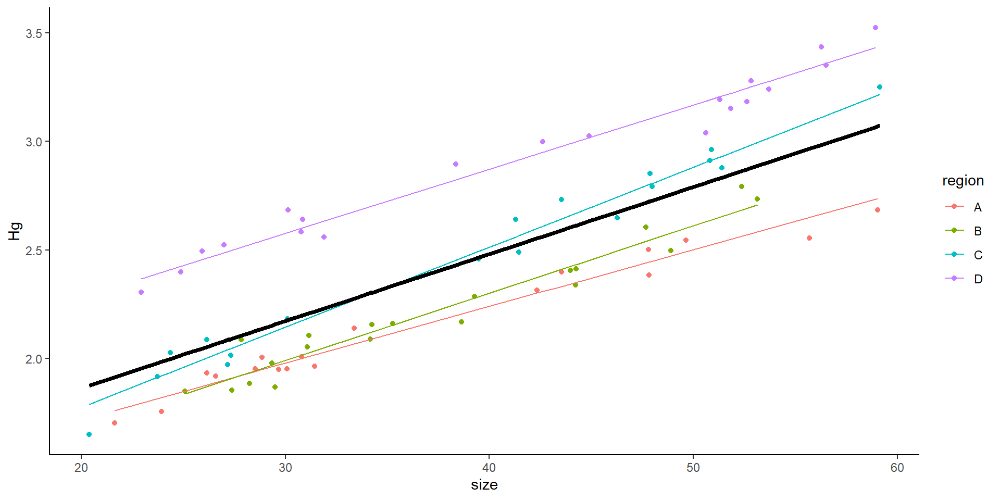
Only random slope
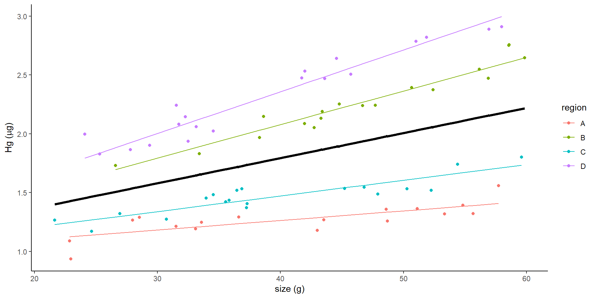
Family: gaussian ( identity )
Formula: Hg ~ size + (0 + size | region)
Data: HgDat2_df
AIC BIC logLik deviance df.resid
-121.4 -112.2 64.7 -129.4 69
Random effects:
Conditional model:
Groups Name Variance Std.Dev.
region size 0.0001226 0.01107
Residual 0.0070218 0.08380
Number of obs: 73, groups: region, 4
Dispersion estimate for gaussian family (sigma^2): 0.00702
Conditional model:
Estimate Std. Error z value Pr(>|z|)
(Intercept) 0.940289 0.040268 23.351 < 2e-16 ***
size 0.021329 0.005618 3.797 0.000147 ***
---
Signif. codes: 0 '***' 0.001 '**' 0.01 '*' 0.05 '.' 0.1 ' ' 1Example
- Zuur, A., Ieno, E. N., Walker, N., Saveliev, A. A. & Smith, G. M. Mixed Effects Models and Extensions in Ecology with R. (Springer New York, 2009).
RIKZ data
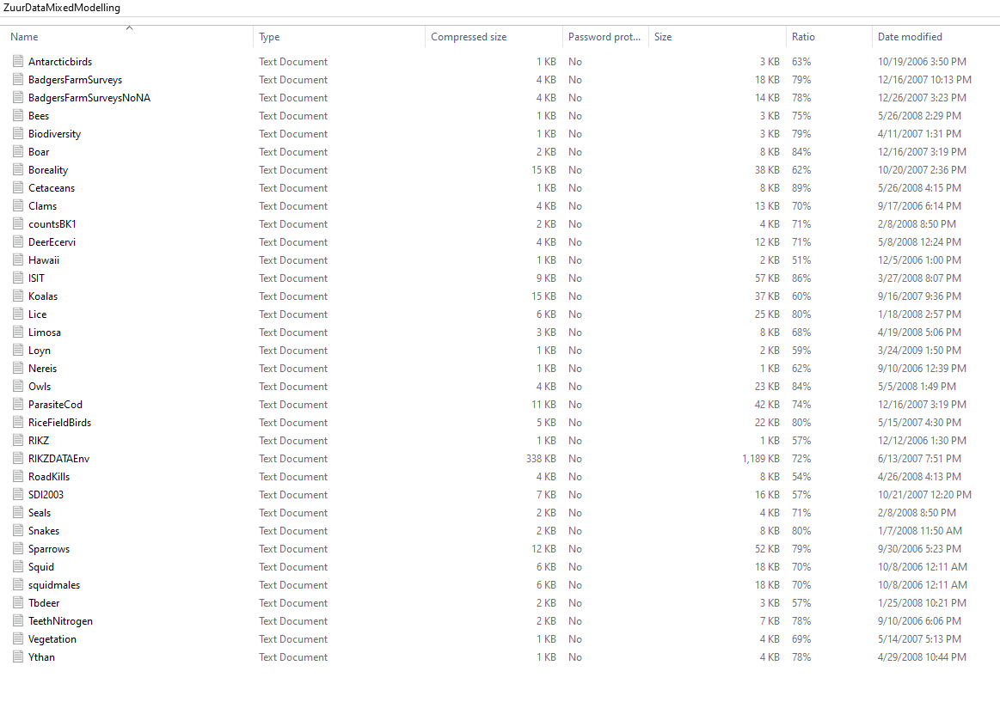
RIKZ data
RIKZ institute
Inter-tidal area (AKA beach): 9
In each beach, 5 samples were taken
Response variable: macro-fauna richness (AKA number of species)
NAP: height of sampling station compared to mean tidal level
Exposure (index). Of multiple environmental conditions. Treated as categorical, as there are three levels
RIKZ data
flowchart TD A[RIKZ DATA] --> B(Beach 1) A --> C(Beach 2) A --> E(Beach 9) B --> F(site 1) B --> G(site 2) B --> H(site 3) B --> I(site 4) B --> J(site 5) C --> K(site 1) C --> L(site 2) C --> M(site 3) C --> N(site 4) C --> O(site 5) E --> P(site 1) E --> Q(site 2) E --> R(site 3) E --> S(site 4) E --> T(site 5)
Let’s work on this example
Objective
flowchart TD A[RIKZ DATA] --> B(Beach 1) A --> C(Beach 2) A --> E(Beach 9) B --> F(site 1) B --> G(site 2) B --> H(site 3) B --> I(site 4) B --> J(site 5) C --> K(site 1) C --> L(site 2) C --> M(site 3) C --> N(site 4) C --> O(site 5) E --> P(site 1) E --> Q(site 2) E --> R(site 3) E --> S(site 4) E --> T(site 5) c
Exploring whether there is a relationship between richness and the two factors: NAP and exposure
We have an N of 45… but do we?
We have multiple potential alternatives: there is an effect of NAP, an effect of Exposure, an effect of both, of neither
Also… there are mixed effects
Random intercept, random slope, both? –> let’s wait to discuss this
Step 1: Read the data… there is a potential issue
- Step 2: decide our analysis! 🤔 Any ideas? any details?
The data

The data
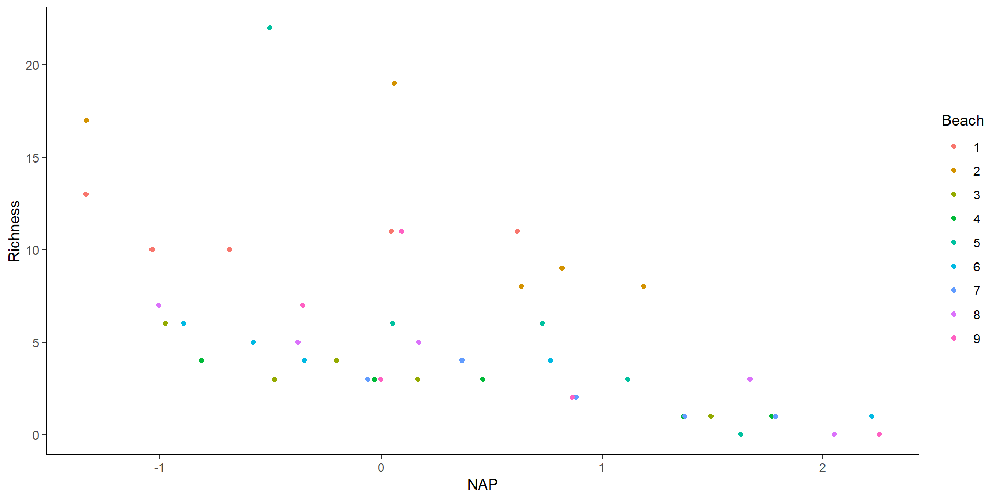
There seems to be an effect of NAP…
how about… a random effect of beach?
step 3: how do we decide random effects?
step 3: random intercept? Or random slope? Or both? Or non
What do we do?
Exposure is categorical… so no random slope 😃
Model selection with random models
WE CANNOT TEST FIXED AND RANDOM EFFECTS AT THE SAME TIME
Test mixed effects first.
We use the “global” or saturated fixed model
How many models?
Use AIC
What model structure?
Model selection with random models
Four models. Run all with glmmTMB
Fixed effects: NAP*Exposure
Family: Poisson
Model selection based on AICc:
K AICc Delta_AICc AICcWt Cum.Wt LL
Mod1 6 210.94 0.00 0.62 0.62 -98.36
Mod3 7 213.24 2.30 0.20 0.81 -98.10
Mod2 7 213.52 2.59 0.17 0.98 -98.25
Mod4 9 217.81 6.87 0.02 1.00 -97.33Are the AIC values the same?
Notes on AIC
I recommend using the AICcmodavg package and making a list!
Next step: let’s explore the model (factors!)
How do you explore the best model?
Let’s look at the summary
Analysis of Deviance Table (Type II Wald chisquare tests)
Response: Richness
Chisq Df Pr(>Chisq)
NAP 51.7328 1 6.359e-13 ***
Exposure 55.4525 2 9.092e-13 ***
NAP:Exposure 3.5604 2 0.1686
---
Signif. codes: 0 '***' 0.001 '**' 0.01 '*' 0.05 '.' 0.1 ' ' 1Next step: let’s explore the model (factors!)
Analysis of Deviance Table (Type II Wald chisquare tests)
Response: Richness
Chisq Df Pr(>Chisq)
NAP 51.7328 1 6.359e-13 ***
Exposure 55.4525 2 9.092e-13 ***
NAP:Exposure 3.5604 2 0.1686
---
Signif. codes: 0 '***' 0.001 '**' 0.01 '*' 0.05 '.' 0.1 ' ' 1- Talk about Zuur’s approach here
Next step?
model1<-glm(Richness~NAP*Exposure, data = rikz, family = poisson)
model2<-glm(Richness~NAP+Exposure, data = rikz, family = poisson)
model3<-glm(Richness~NAP, data = rikz, family = poisson)
model4<-glm(Richness~Exposure, data = rikz, family = poisson)
model5<-glm(Richness~1, data = rikz, family = poisson)
modeltab<-AICcmodavg::aictab(list(model1,model2,model3,model4,model5))
modeltab
Model selection based on AICc:
K AICc Delta_AICc AICcWt Cum.Wt LL
Mod2 4 209.37 0.00 0.69 0.69 -100.19
Mod1 6 210.94 1.57 0.31 1.00 -98.36
Mod3 2 259.47 50.10 0.00 1.00 -127.59
Mod4 3 265.87 56.50 0.00 1.00 -129.64
Mod5 1 323.84 114.47 0.00 1.00 -160.88Evidence ratios
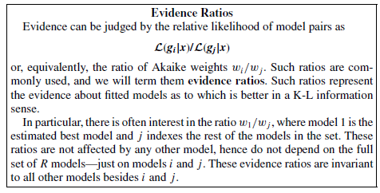
Burnham and Anderson
Evidence ratios
Evidence ratio between models 'Mod2' and 'Mod1':
2.19 - Raffle tickets
Last step: Model validation
Of the best model.
Other steps?
Check assumptions (if normal)
Mixed effects models pt 2
For some of the other examples
An alternative to mixed models can be repeated measures methods
- Split-plot with adjustments
- Profile analysis
- Linear mixed models with correlations
Mixed effects models pt 2
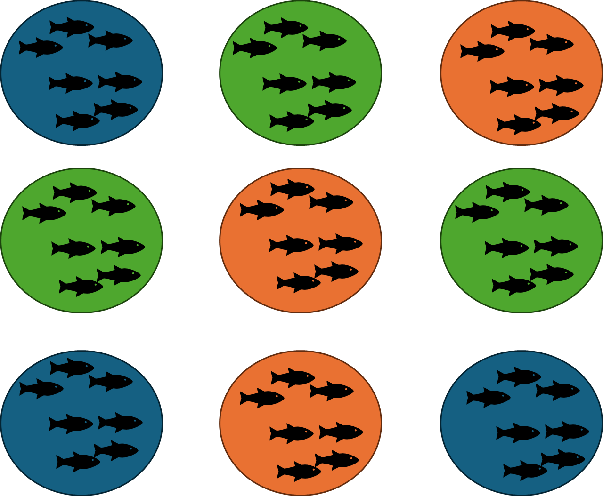
Split plot with adjustments
Repeated measures ANOVA
Model:
\[ y_{ijk} = \mu + \alpha_i + \beta_j + \alpha \beta_{ij} + \delta_{ik} + \epsilon_{ijk} \]
Split plot
You need to adjust the p-value!
It is the best method to use for well-balanced, experimental data. Also, simplest to do and interpret
You get p-values for time, for treatment and for the interaction
Profile analysis
Step 1: Run a MANOVA (what even is this?) –> Multivariate
Step 2: Run multiple ANOVAS one for each time period
Mixed models with correlation
More about this on Friday’s lab
Next week: Data visualization
My favorite part of stats/data analysis/ etc
You can be creative! but be smart and ethical.
Plots are easy to “manipulate”
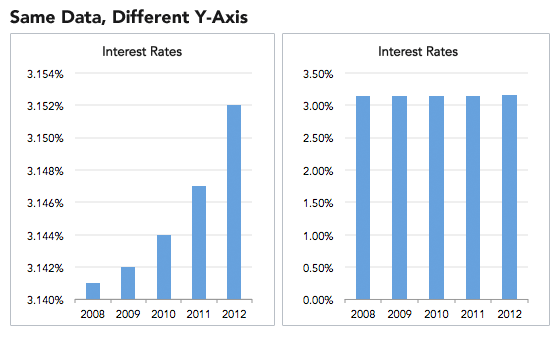
Misleading plots
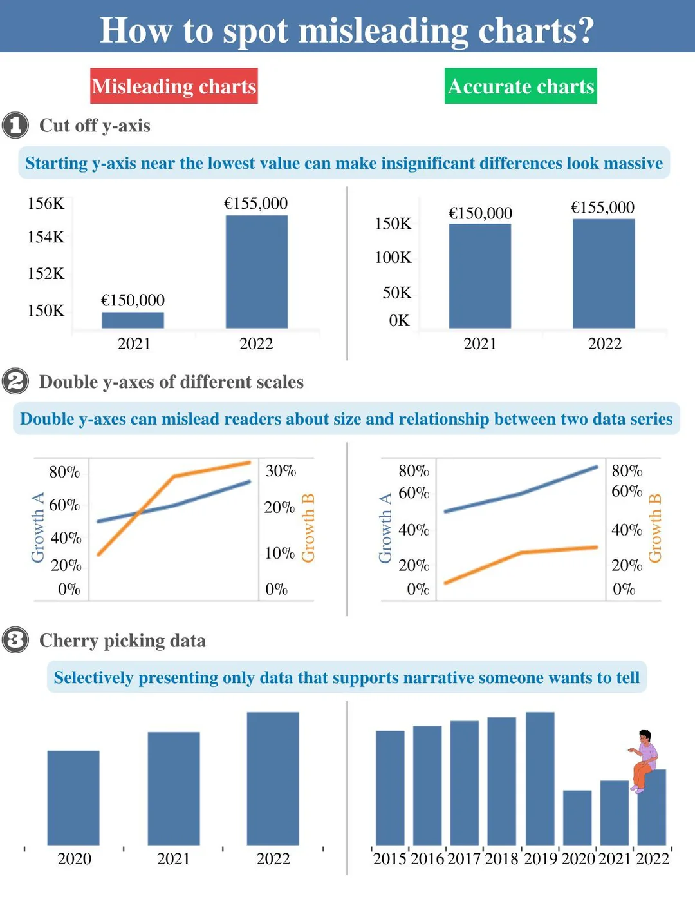
Incorrect and misleading plots
Pie chart with total over 100
Avoid pie charts. Grouped barplots are potentially teh best solution for “parts of a whole”. Stacked barplot can be challenging to distinguish.
Plotting
Estimate (point) and CI
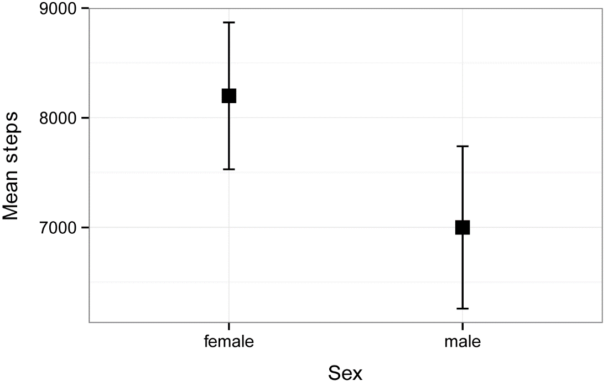
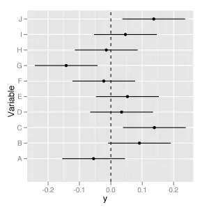
Similar to a line and CI
Plots
Distribution
Correlation
Ranking
Part of a whole
Evolution (time series, line plot)
Map
Flows
Distribution
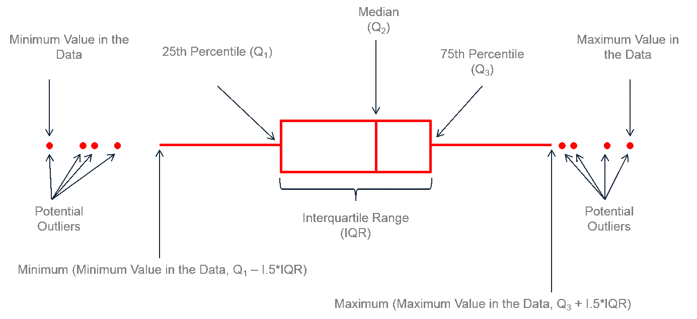
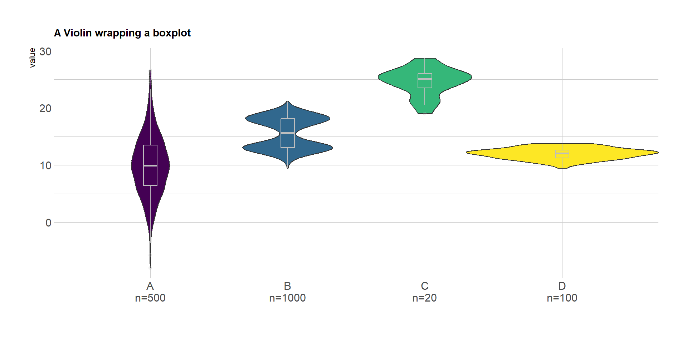